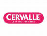
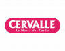
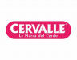

Clientes
 

Com a Água Estruturada na Indústria consegue-se MAIOR SUSTENTABILIDADE, menor consumo de água, redução do uso de produtos químicos, maior eficiência nos processos, equipamentos mais saudáveis e duráveis, menor consumo de energia e maior qualidade dos produtos, entre outros.
